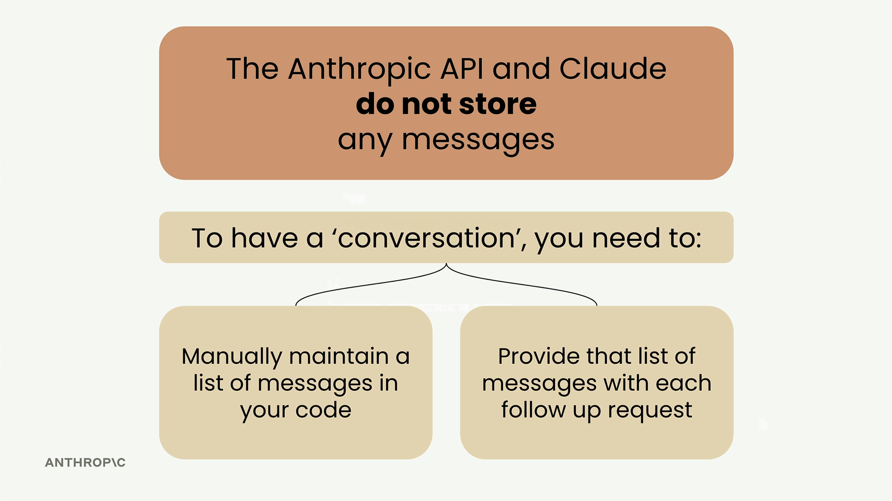

Диалог из нескольких ходов
Чему научитесь
Видео 8:54 и текст урока
К концу урока вы сможете:
- объяснить, почему Claude не помнит прошлые запросы;
- вести список сообщений и каждый раз отправлять его целиком;
- пользоваться функциями
add_user_message,add_assistant_messageиchat.
Видео и текст урока.
Смотреть урок на Skilljar Multi-Turn conversations · 8:54При работе с Anthropic API нужно понять одну ключевую вещь: Claude не хранит историю вашего разговора. Каждый запрос полностью независим и ничего не знает о предыдущих.

Значит, если вы хотите многоходовый разговор, где Claude помнит контекст прошлых сообщений, состояние разговора придётся вести самим.
Проблема запросов без состояния
Допустим, вы спросили «What is quantum computing?» и получили хороший ответ. Потом пишете «Write another sentence» — и Claude понятия не имеет, о чём речь. Он напишет предложение на какую-то случайную тему, потому что не помнит разговора о квантовых вычислениях.

Как устроен многоходовый разговор
Чтобы сохранить контекст, нужно:
- самим вести в коде список всех сообщений;
- с каждым запросом отправлять всю историю целиком.

Схема, которая работает:
- отправить Claude первое сообщение пользователя;
- взять ответ Claude и добавить его в список как сообщение assistant;
- добавить следующий вопрос как ещё одно сообщение user;
- отправить Claude всю историю разговора.

Вспомогательные функции
Чтобы управлять разговором было проще, можно завести три вспомогательные функции:
def add_user_message(messages, text):
user_message = {"role": "user", "content": text}
messages.append(user_message)
def add_assistant_message(messages, text):
assistant_message = {"role": "assistant", "content": text}
messages.append(assistant_message)
def chat(messages):
message = client.messages.create(
model=model,
max_tokens=1000,
messages=messages,
)
return message.content[0].text
Собираем всё вместе
Вот как с их помощью вести разговор:
# Start with an empty message list messages = [] # Add the initial user question add_user_message(messages, "Define quantum computing in one sentence") # Get Claude's response answer = chat(messages) # Add Claude's response to the conversation history add_assistant_message(messages, answer) # Add a follow-up question add_user_message(messages, "Write another sentence") # Get the follow-up response with full context final_answer = chat(messages)
Теперь Claude поймёт, что «Write another sentence» — это просьба продолжить определение квантовых вычислений: вы передали ему весь контекст разговора.
Эти функции пригодятся на протяжении всей работы с Claude: с ними гораздо проще строить приложения, которые ведут осмысленный разговор на много ходов.
Дальше
В упражнении из этих функций собирают цикл: маленький чат-бот прямо в ячейке ноутбука.
Оригинал урока: Multi-turn conversations.